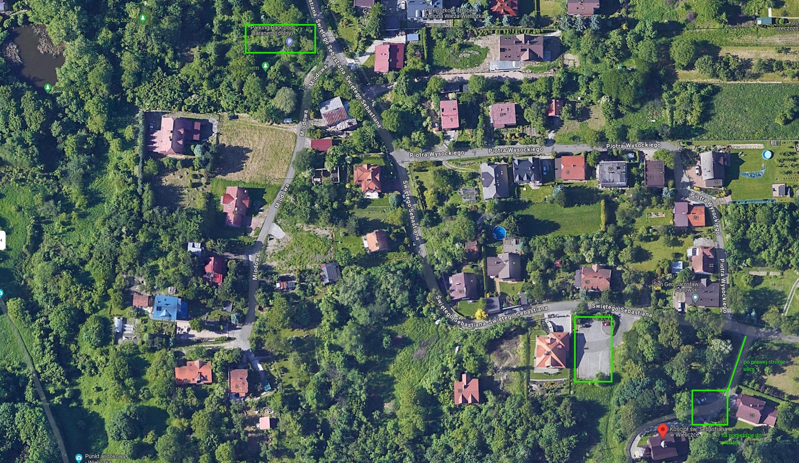
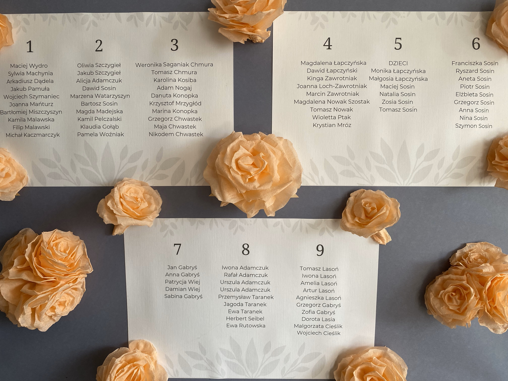

-
Przygotowania w zachrystii
Świadków oraz osoby czytające podczas mszy prosimy o podejście do zachrystii
-
Ceremonia w kościele
-
Przyjazd państwa młodych do domu weselnego
Powitanie, tłuczenie kieliszków, szampan, Sto Lat
-
Obiad na sali
Przystawka, pierwsze danie, drugie danie, deser
-
Składanie życzeń
-
Rozpoczęcie tańców i imprezy
-
Oczepiny
-
Zakończenie wesela
14:00 - 25 maja 2024
Ślub Klaudii i Pawła
Kościół św. Sebastiana w Wieliczce
Podręcznik gościa weselnego
Odliczanie
Do ślubu pozostało jedynie:
Plan wydarzenia
Parking pod kościołem
Stoliki
Sugestie dla gości
- W kościele, w którym odbędzie się ceremonia zaślubin, prosimy nie rozrzucać konfetti, ryżu ani bilonu.
- Prosimy nie przynosić kwiatów - goście zaoszczędzą czas i pieniądze, my nie będziemy musieli zakładać kompostownika.
- Prosimy nie przynosić fizycznych prezentów. Oszczędzamy obecnie na nowe mieszkanie i jeśli chcecie nam coś podarować, możecie wesprzeć nas finansowo.
- Na weselu będzie alkohol, ale nie chcemy, żeby wokół niego obracała się zabawa. Prosimy nie namawiać pary młodej ani innych gości do picia. Każdy sam zdecyduje jak chce się bawić i chcemy uszanować te decyzje.
- Pamiętajcie, że to jedynie sugestie - najważniejsze jest dla nas, żeby spotkać się z Wami w tym dniu. Jesteśmy pewni, że razem uczynimy go wyjątkowym!